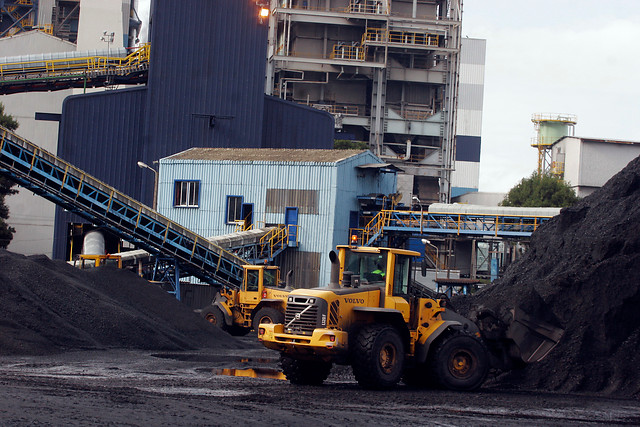
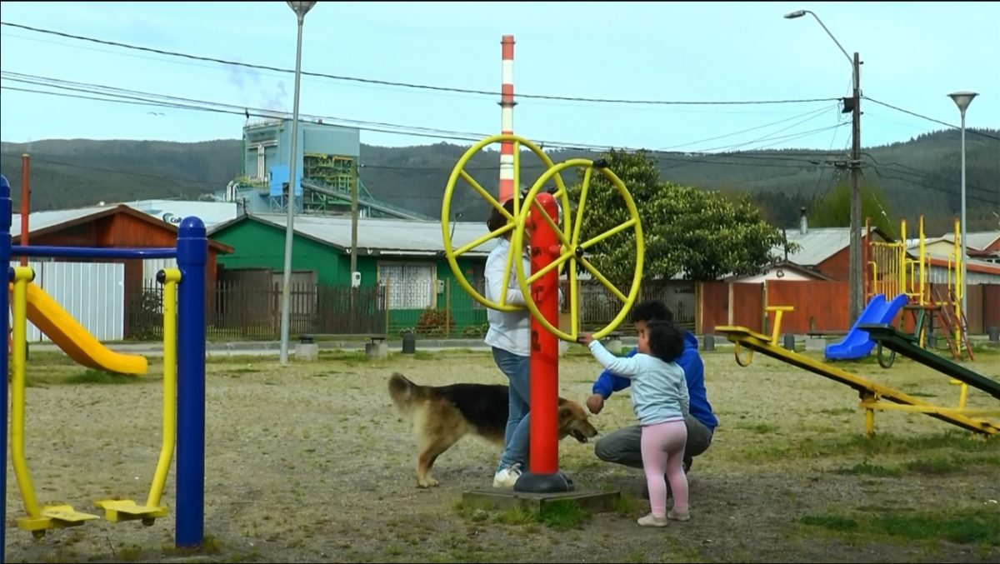

En la zona de Coronel-Lota, se evidencian vulneraciones significativas a los derechos fundamentales en los ámbitos de salud y medio ambiente. En relación al aspecto de la salud, la actividad industrial predominante en la región ha generado una preocupante contaminación ambiental, que probablemente incide negativamente en la salud de los residentes locales. Esta contaminación, caracterizada por emisiones tóxicas y partículas en el aire, podría estar contribuyendo al desarrollo de enfermedades respiratorias y otros problemas de salud entre la población. Por otro lado, en el ámbito medioambiental, la actividad industrial en Coronel-Lota está generando un impacto adverso en el entorno natural circundante. Se observa una notable contaminación del aire, suelo y agua, lo cual no solo afecta la calidad de vida de los habitantes, sino también la biodiversidad local y los ecosistemas. Este deterioro medioambiental plantea un riesgo serio para la sostenibilidad de la zona y el bienestar de sus habitantes a largo plazo. En conjunto, estas vulneraciones representan una preocupante situación que demanda atención urgente por parte de las autoridades competentes.
Coronel, la zona de sacrificio que no resiste más: alcalde acusa que la ciudad vive una “situación de emergencia”.
Leer másEl relato de Viviana Melany, presidenta de la junta de vecinos "Una nueva vida" en el sector La Peña 2 de la población La Colonia, brinda una mirada cruda sobre los efectos de la erradicación forzada impulsada por la empresa ENEL y las autoridades. A pesar de las promesas de una vida mejor en casas supuestamente más bonitas y lejos de la contaminación industrial, la realidad se ha vuelto un duro golpe para los residentes. El testimonio de Viviana revela una verdad dolorosa: las casas nuevas no cumplen con las expectativas. A un costo significativo de 650 UF, las viviendas resultaron estar en mal estado, lo que demuestra una estafa que impacta profundamente en la calidad de vida de quienes las adquirieron. La ilusión de un futuro prometedor se desvanece ante la realidad de hogares deteriorados. La ausencia de infraestructura básica, como multicanchas y áreas de recreación para niños, evidencia una falta de planificación y preocupación por el bienestar de la comunidad. Las condiciones actuales contrastan drásticamente con la vida en La Colonia, donde, a pesar de las carencias, existían espacios para el esparcimiento y el cultivo, especialmente valorados por adultos mayores. El impacto económico también es significativo. Las nuevas tarifas de servicios básicos, como el agua y la luz, han generado un aumento considerable en los gastos mensuales, afectando especialmente a aquellos con pensiones mínimas. Anteriormente, en La Colonia, los costos eran considerablemente más bajos, lo que permitía un mejor manejo de los ingresos limitados. El relato de Viviana Melany pone al descubierto la crudeza de una realidad marcada por la desigualdad y la falta de consideración por parte de las empresas y autoridades. La erradicación forzada ha dejado cicatrices profundas en la comunidad, obligándola a comenzar una vida nueva en condiciones precarias y desfavorables, lejos de sus hogares y recuerdos, todo a causa de intereses comerciales y decisiones gubernamentales cuestionables.
Relato de Viviana Melany, presidenta de la junta de vecinos “Una nueva vida” sector la peña 2,la población la colonia,erradicada por la empresa ENEL. El relato trata sobre todos los grandes cambios que tuvieron en sus vidas debido a la erradicación por parte de la empresa Enel y las autoridades. “hay más cosas que perdió por una casa que se supone más bonita y que no está al lado de una empresa que contamina, pero no es lo mismo porque igual las casas acá están en mal estado”. en este fragmento del relato que hizo la mujer podemos entender que a pesar de haberse erradicado para estar mejor ya que la empresa se iba a tomar el lugar de ellos las cosas siguen mal,por el mal estado de las casas que les vendieron en 650 UF y la personas se tuvieron que ir si o si para tener una mejor vida,pero las cosas nunca cambian ni tampoco mejoraron y eso lo podemos ver en el siguiente fragmento: “También nosotros nos dimos cuenta que acá no hay una multicancha, no hay juegos para los niños, nada de eso y allá en La Colonia, pese a que igual hacían falta cosas, habían dos multicanchas, habían juegos infantiles para los niños, y acá no hay cosas que necesitan los niños y los adultos mayores no cuentan con su patio para plantar que para ellos era un ahorro, porque al cambiarse para acá, con las pensiones que les dan, que es la pensión mínima, son cerca de 110 mil pesos y los gastan en la luz y en el agua prácticamente. Allá era diferente porque no se pagaba alcantarillado y no se pagaban esas cosas que ahora sale más acá; allá el agua salía 5 mil o 6 mil pesos, ahora acá llegan cuentas de hasta 40.000 pesos” , la vida de todas estas personas cambió por completo tuvieron que dejar sus historias vividas en ese lugar y mucho recuerdos atrás por culpa de esta fábrica de enel,además que les hicieron prácticamente una estafa con las casas que les vendieron ya que estaban fabricadas con material muy económico por lo cual les afecta a su vida cotidiana,el gran problema fue que las personas tuvieron que comenzar una vida completamente nueva y para nada adecuada y decente como la que tenían en su anterior territorio a lo cual ellos ya estaban acostumbrados,todos se ven afectados por la erradicación por la gran culpa de la fábrica de enel.